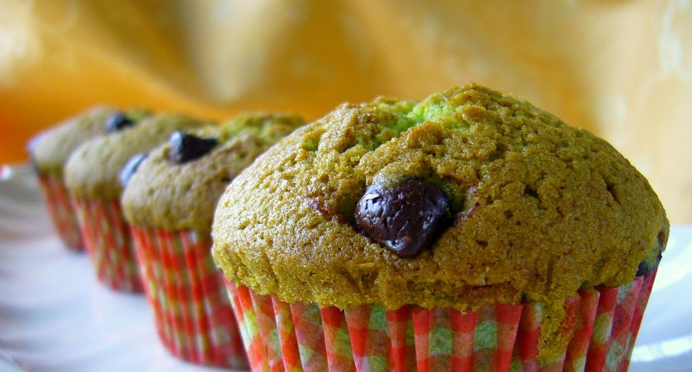

Ingredients:
- 190g flour
- 70g ground ginger
- 2 eggs
- 1 ½ teaspoons baking powder
- ½ teaspoon baking soda
- ½ teaspoon salt
- 60g caster sugar
- 60g brown sugar
- 200ml coconut milk
- 100ml vegetable oil
- 1 teaspoon pandan flavoring
- Sliced almonds for garnish
How to Cook:
- In a bowl, combine all dry ingredients until well mixed.
- In a separate bowl, combine all wet ingredients.
- Gradually add the wet ingredients to the dry ingredients, stirring until well combined.
- Pour the batter into a muffin tray lined with paper liners or greased, filling each cavity about 3/4 full.
- Sprinkle sliced almonds on top of each muffin.
- Bake in a preheated oven at 180°C (350°F) for about 15 minutes or until cooked through. You can test for doneness by inserting a toothpick into the center of a muffin; it should come out clean.
- Serve the muffins hot.